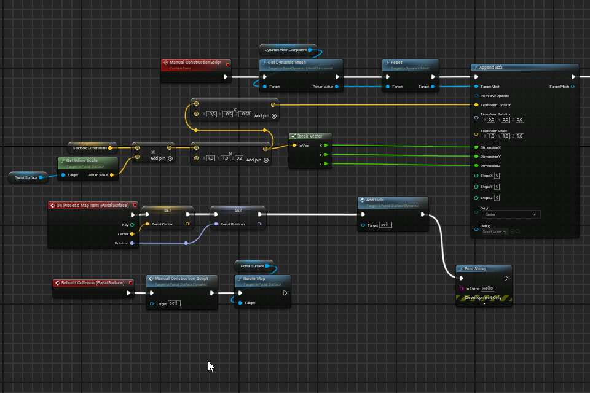
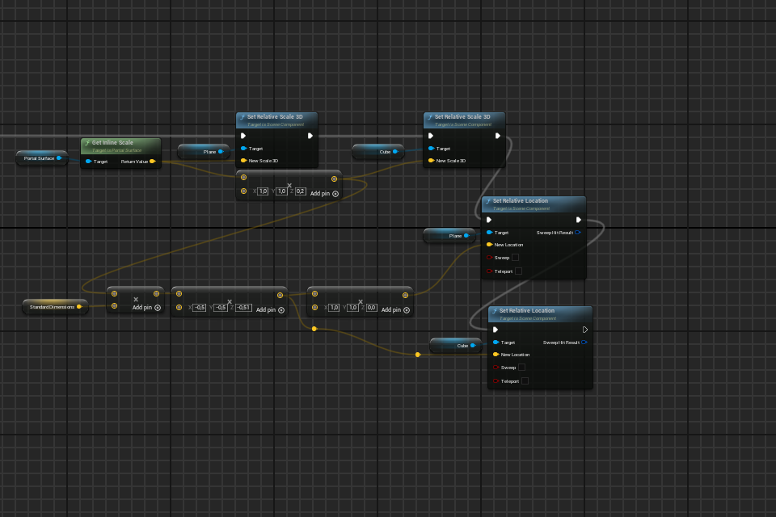
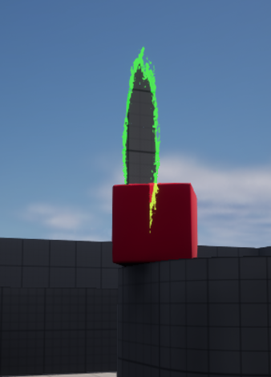
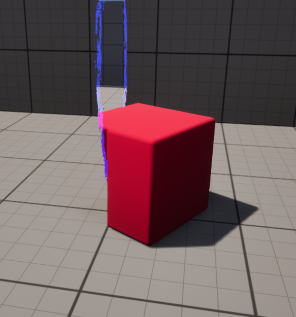
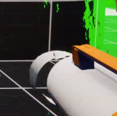
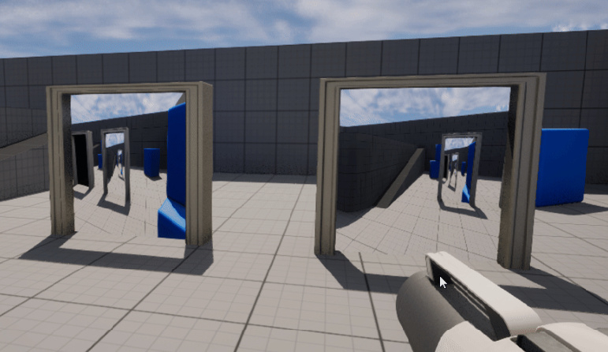

Unreal Engine 5.4.2 - Portals
Posted by Dobbenberg, Wouter on 2024-07-31
I'm excited to announce that the final build of my portal mechanics project is now available! You can access and download the project from my GitHub repository via the following link:
GitHub Repository: UE-5.4 - Portals
GitHub Repository: UE-5.4 - Portals
Current Build Features
The build includes a comprehensive set of features, meticulously crafted to create a seamless portal experience in Unreal Engine 5.4.2 using C++:- Portal Scene Capture to Texture Target: Real-time rendering of the portal view.
- Scene Capture Clip Plane: Prevents the virtual camera from being obscured by walls.
- Player/Object Teleportation: Smooth transitions through portals.
- Player/Object Clip Plane: Prevents objects from sticking through portals.
- Player/Object Cloning: See yourself emerge on the other side of the portal.
- Player Control Rotation Fixes: Resolves control and actor rotation bugs.
- Player Character Animation Syncing: Ensures animations are consistent across portals.
- Portal Edge Colliders: Prevents players and objects from clipping through the portal edges.
- Portal Edge Color Options: Customize the appearance of portal edges.
- Portal Gun: Shoot and place portals dynamically.
- Portal Wall Placement with Edge Detection: Ensures portals fit properly on walls.
- Portal Placement Rotations: Align portals correctly with player orientation.
- Portal Overlap Prevention: Avoids overlapping portals.
- Portal Surface Dynamic Collision Meshes: Adapts collision meshes in real-time to portal placements.
This project is built in Unreal Engine 5.4.2 using C++. It draws inspiration from various sources, including a classic tutorial on portal mechanics by Froyok. For those interested in exploring the basics of teleportation mechanics, I highly recommend checking out Froyok's blog post.
Future Plans and Ideas
There are several features and improvements I never got to implementing. However, if I ever return to this project, here are the planned future updates, including:- Draw Call Reduction: Implementing the stencil buffer and bRenderToMainThread options in the scene capture component to optimize performance.
- Portal Vortex: A feature to make it easier to jump into portals.
- Minimum Portal Exit Velocity: Ensuring a consistent exit speed when leaving a portal.
- Raycasts Through Portals: Allowing raycasts to pass through portals for more dynamic interactions.
- Portals Through Portals?: Exploring the possibility of seeing through multiple portals.
- Portal Relative Physics: Creating unique physics interactions relative to the portal's orientation.
Posted by Dobbenberg, Wouter on 2024-07-31
To facilitate transitions for objects and players through portals placed on solid walls, I implemented two key collision methods. These techniques ensure that actors can move through portals without affecting the collisions of any other objects.
Dynamic Collisions for Seamless Portal Transitions
- Custom Collision Channel: A custom collision channel was created to manage collision interactions between specific objects. This channel allows for enabling and disabling collisions as needed, preventing unintended interactions as objects approach or pass through a portal.
-
Dynamic Collision Mesh:
- A custom geometry blueprint was developed to dynamically update the collision mesh at runtime. When a portal is placed, the system creates a squared opening in the collision mesh at the portal's location. This ensures that players and objects can pass through the portal without colliding with the solid wall.
- The portal’s position data is sent to the geometry script blueprint using delegates, enabling updates to the collision mesh to be called from the portal manager script.
Below are snapshots of the blueprint responsible for these dynamic mesh operations, demonstrating how the collision mesh adapts in real-time. Additionally, a video showcases the dynamic collision system in action, highlighting the smooth transitions and interactions made possible through these methods.


Posted by Dobbenberg, Wouter on 2024-07-31
To enhance the interactivity and realism of the portal mechanics, I developed a portal gun that shoots portal projectiles to place portals on surfaces. This process involved several key steps:
Creating a Portal Gun with Projectile-Based Portal Placement
- Portal Projectile Class: I created a PortalProjectile class, which defines the properties and behavior of the projectiles fired from the portal gun. These projectiles travel in a straight line and detect collisions with surfaces.
- Surface Detection: Upon hitting a surface, the projectile checks if the surface is suitable for portal placement. This involves ensuring that the surface is large enough and oriented correctly to host a portal.
- Placement Adjustment: If the initial impact point doesn't provide enough space for the portal, the system attempts to slightly adjust the portal's position to find a suitable spot. This adjustment process ensures the portal can fit within the bounds of the surface. Additionally, if another portal is already present nearby, the system moves the new portal away to avoid overlapping, similar to the surface placement adjustment.
- Orientation Matching: The portal's orientation is aligned with the player's facing direction at the moment of placement. This ensures that the portal aligns naturally with the player's perspective, maintaining a coherent visual and gameplay experience.
This setup mimics portals original portal placement mechanics as closely as I could get it in the limited time I had.
Posted by Dobbenberg, Wouter on 2024-07-31
In Unreal Engine, creating basic surface-level portals is relatively straightforward. However, this simplicity often leads to visual artifacts. By employing key techniques such as actor cloning, clipping, and animation synchronization, you can effectively eliminate these issues and achieve seamless portal interactions.
Cloning Actors through Portals
The process of cloning actors through portals involves detecting when a teleportable actor is near a portal, creating a duplicate on the other side (linked portal), and maintaining synchronization between them. Here’s a breakdown of how this was achieved:-
Detection and Creation:
- Detect when a teleportable actor enters a trigger zone near a portal. In my case, I could just re-use the same collider I had set up for the teleportation logic.
- Instantiate a duplicate of the actor on the other side of the linked portal using Unreal Engine’s spawning and positioning functions.
-
Synchronization:
- Using the same transformation formula's used for teleportation, the location, orientation, velocity, and scale relative to the linked portal are matched to the original.
-
Preventing Infinite Duplication:
- To prevent cloned actors from being teleported or triggering the clone algorithm, they are not added to the teleportation TMap discussed in the previous blog. This ensures that teleportation logic is not applied to the cloned actors.
- Instead, a new TMap is maintained which stores the cloned actors. This map is used as a reference list, which prevent any teleportable actor from cloning itself twice through the same portal.
Clipping with Mask/Clip Plane
Clipping prevents visual artifacts when actors move through portals. By using a mask or clip plane, you can hide parts of the actor that extend beyond the portal boundary. Here’s how I implemented this:-
Using 3D Box Mask:
- I created a new material node to allow passing in material parameters.
- By enabling masking in the material and combining it with a 3D box mask node, these parameters can be used to dynamically set the mask's location.
- To update the material parameters at runtime, the materials are converted to dynamic materials using C++ code.
- Finally, this masking logic was integrated into the existing materials of all teleportable actors.
A visual example of the 3d box mask is shown in the following two images. Left shows the 3d box mask disabled, and right shows it enabled.


Animation Synchronization
To prevent visual discrepancies between original and cloned actors, animations must be synchronized. This involves integrating Unreal Engine’s animation graph with C++ to ensure synced animation playback. The following image shows a close-up of one of these animation de-syncs:

Posted by Dobbenberg, Wouter on 2024-07-30
Hey there, welcome to the very first blog post about my portal mechanics submission for the CaptainCoder's "Mechanically Challenged" gamejam!
Portal Setup
Two main elements are involved: the "entry" portal where the player looks through and the "exit" portal which acts as a window to the destination area. The view through the entry portal is rendered by a SceneCaptureComponent to a RenderTexture, which is then displayed on the surface of the exit portal.Camera Positioning
To make the portal effect believable, the capture camera must be positioned and oriented in a specific way relative to the portals and the player:
-
Relative Positioning: The capture camera’s position is calculated by reflecting the player's position through the plane of the entry portal to the exit portal. This can be mathematically expressed as:
\( M = T_p \cdot T_{lp}^{-1} \cdot T_{pc}\)
Where:- \(M\) is the resulting transformation matrix that represents the final camera position and orientation.
- \(T_p\) is the local-to-world transformation matrix of the entry portal.
- \(T_{lp}^{-1}\) is the inverse of the local-to-world transformation matrix of the linked portal (which transforms from world space to the linked portal's local space).
- \(T_{pc}\) is the local-to-world transformation matrix of the player camera.
-
Screen UV Coordinates: The render texture captured by the secondary camera needs to be scaled correctly to fit the portal's surface. This is done using screen UV coordinates, which map the texture onto the portal's surface. The uv matching for unreal is done within the Unreal Engine Material Shader. Some important notes:
- Aspect Ratio Considerations: It's crucial to maintain the aspect ratio of the rendered texture to avoid stretching the image, which would break the illusion of a seamless window into another space. Whenever working within the Editor, realize that the aspect ratio of the editor play window is not consistent.
- FOV Considerations: The field of view of the capture camera should match the player's camera to ensure a consistent perspective. If the portals differ in size, adjustments might be needed to the FOV to maintain visual consistency.
The image below shows some of my early experimentation with the scene capture components for the portals. At this stage, both the necessary 180-degree rotation and the correct UV screen coordinates were missing. This led to misaligned and improperly scaled textures on the portal surfaces, breaking the illusion of seamless portal transitions.

Teleporting the player
Now that players can peer through the portal, it's time to delve into the teleportation aspect. Similar to how we calculate the camera position for portals, teleportation follows the same logic when teleporting.Additionally, there is a focus on determining when the actor moves through the portal. This process involves two key functions: one to detect proximity to the portal and another to ascertain the actor's position relative to the portal plane. When the actor is near the portal and changes direction relative to the portal plane, indicating movement through it, teleportation occurs. Implementing both of these functions ensures teleportation only happens when the actor moves through.
In the early versions, teleportation was still a bit janky. This was due to inconsistencies with the aspect ratio, the camera position relative to the actor's origin, and incorrect coloring of the SceneCapture component.
In later versions, all of these issues were remedied, and teleportation became almost completely seamless. This can be seen in the video below.
Teleporting objects
The teleportation of objects functions similarly to that of the player character. However, not all actors should be teleportable; static, immobile actors near the portal should be excluded from the teleportation logic. To identify which actors can be teleported, a custom C++ component is added to them. These identified actors are then stored in a TMap, which the teleportation logic iterates through.Each teleportable actor can than be teleported through the portal as shown with the example video below: